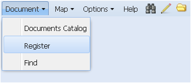
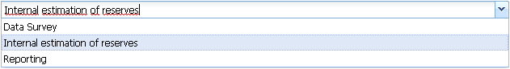
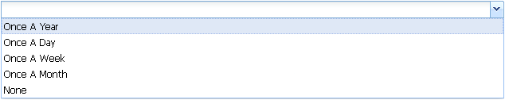

Команда Register
Команда Register (Регистрировать новый документ) служит для занесения в хранилище как метаданных о новом документе, так и самого документа. Объем информации о документе определяется карточкой метаданных, которая заполняется пользователем при регистрации документа.
Выбор команды осуществляется нажатием на её название левой кнопкой мыши, при этом поле названия подсветится цветом.
В рабочем окне Приложения появится специальный интерфейс с названием New Document, представляющий собой карточку метаданных на документ и позволяющий вводить метаданные о документе для его последующей загрузки в хранилище. Все метаданные нового документа сгруппированы в девять панелей. Десятой панелью является панель привязки документов к пространственным объектам.
Панель General включает четыре поля учётных данных:
- Title Rus - русское название документа для его идентификации;
- Title Eng - английское наименование документа;
- Keywords – основные ключевые слова, отражающие суть документа и позволяющие его идентифицировать;
- Comment - Комментарии оператора при необходимости внесения дополнительной информации, касающейся регистрируемого документа: технология его создания, краткое описание и т.п. (необязательное поле для заполнения).
Все поля заполняются вручную.
Панель Numbers включает три поля учётных данных:
- Year - год постановки на учёт (заполняется вручную, имеется возможность погодовой корректировки с помощью пиктограммы );
- Number - учётный номер документа (заполняется вручную);
- Archive Number - архивный номер документа (заполняется вручную).
Панель Domain включает шесть полей учётных данных:
- Domain Path - путь к каталогу размещения документа, представляется в дополнительном окне. Пользователь должен указать предполагаемый классификационный радел предметной области, определяющий местоположение документа в иерархической файловой структуре, для его размещения;

- Work Process - стадия работ, к которой относится регистрируемый документ, выбирается из ниспадающего списка; - File Path - служебное поле, указывающее точное местоположение файла, заполняется автоматически. Панель Classified включает два поля учётных данных с информацией о режимных ограничениях использования документа:
- Classification - уровень ограничения, выбирается из ниспадающего списка;
 Панель Dates включает три поля учётных данных:
Панель Dates включает три поля учётных данных:
- Origination - дата создания документа, выбирается из ниспадающего календаря;
- Approval - дата утверждения документа, выбирается из ниспадающего календаря;
- Registration - дата загрузки документа в хранилище – заполняется автоматически текущей датой, может быть скорректирована пользователем.
Панель Authors включает единственное поле авторов документа (выбираются из ниспадающего списка). Каждый автор вносится в отдельной строке, которая добавляется пользователем при нажатии на пиктограмму или удаляется при нажатии на пиктограмму .
Панель Document Type включает четыре поля учётных данных:  Панель Geo Data attributes заполняется только для геоданных и изначально находится в свёрнутом положении.
При нажатии на пиктограмму панель разворачивается Панель File(s) содержит единственное поле для указания местоположения загружаемого файла. Внешний вид и название панели не постоянны и формируются в соответствии с классом и типом загружаемого документа, заданными в панели . Например, название File(s) поменяется на Word Document file, Bitmap Image file или AVI Video file, если выбраны, соответственно, текстовой файл MS Word, рисунок BMP или видео-файл формата AVI. При этом в поле появятся возможные расширения загружаемых файлов и пиктограмма добавления полей .
Каждая карточка метаданных должна соответствовать документу, состоящему из одного файла или нескольких файлов одного типа. Исключением является особый тип документов, относящихся к классу Geo Data Files и являющихся комплексными файлами, т.е. состоящими из файлов разного формата. Например, при загрузке шейп-файлов (shapefiles) панель предоставит поля для указания пути к каждому составляющему файлу. Большинство полей метаданных всех девяти панелей являются обязательными для заполнения. Если такие поля будут пропущены, то система обозначит их красным цветом и процедура загрузки документа станет невозможна. Ниспадающие списки для полей, в которых осуществляется выбор необходимых значений, ведутся администратором системы. В случае отсутствия в списке нужных значений пользователь должен обратиться к администратору, обладающему правами на корректировку списка, либо выбрать опцию Нет в списке. После надлежащего заполнения всех необходимых полей в панелях метаданных пользователь может либо нажать на кнопку Add в правом нижнем углу интерфейса для загрузки документа в хранилище либо перейти к панели
- General Types – общие типологические классы, к которым принадлежат документы – текстовые файлы, изображение, звук, видео, файлы геоданных и т.д., выбирается из ниспадающего списка;
- Type – тип документа конкретного типологического класса, выбирается из ниспадающего списка. В списке для выбора будут предложены только те типы файлов (форматы), которые относятся к заданному классу. Например, для класса рисунков будут предложены только файлы изображений.
При заполнении данного поля поменяется название и вид панели File(s) в соответствии с выбранным типом файла;
- Origination Details – комментарии пользователя, касающиеся типа и вида документа (необязательное поле для заполнения, заполняется вручную);
- Update Cycle – периодичность обновления документа, выбирается из ниспадающего списка.
и раскрывает четыре поля метаданных:
- Geo Type - тип графической модели пространственных объектов: точки, линии, полигоны, растр, выбирается из ниспадающего списка;
- Resolution - размер ячейки растровых данных (заполняется вручную, имеется возможность пошаговой корректировки с помощью пиктограммы );
- Projection - проекция хранения геоданных, выбирается из ниспадающего списка.

Опция Select File раскрывает окно каталога локального диска пользователя, в котором выбирается путь к загружаемому файлу документа. Пиктограмма позволяет убрать ненужное поле.
 и осуществить привязку документа к пространственному объекту.
и осуществить привязку документа к пространственному объекту.